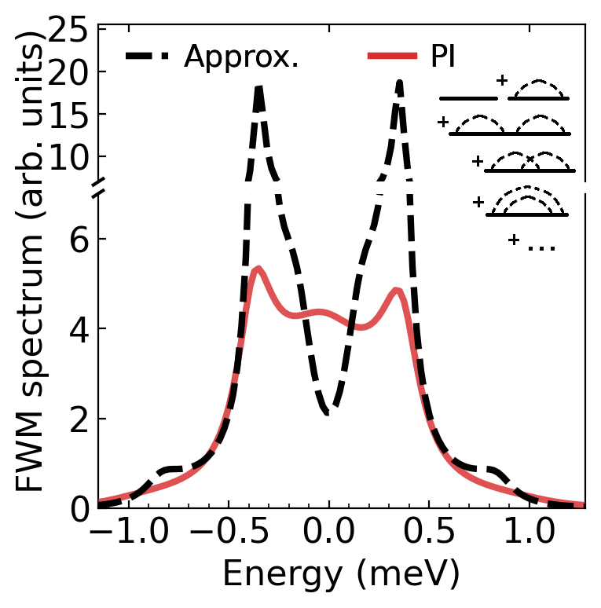

A semiconductor quantum dot (QD) acting as a two-level system, coupled to an optical resonator (cavity) and subject to a pulsed laser excitation produces a nonlinear optical response, which is strongly affected by the phonon environment. Phonon-induced dephasing in this response cannot be captured by simple approximate treatments of phonons and is more pronounced in nonlinear, rather than linear channels.
The authors develop a theory to accurately calculate the four-wave mixing (FWM) polarization, rigorously addressing the effect of phonons in this nonlinear response for the first time. This is achieved by an exact treatment of phonons using a path integral (PI) based approach. In particular, it allows the authors to capture, in experimentally relevant parameter regimes, a spectral asymmetry and non-Markovian quantum dynamics arising in the QD-cavity system due to the memory of the phonon environment. The PI results show strong deviations from the known approximate approaches (compare dashed and solid lines in the figure). Furthermore, they are of practical significance as they can be compared to those obtained via a reliable and well-established experimental technique – heterodyne spectral interferometry. The figure shows the calculated optical spectrum of the QD-cavity system and the first few Feynman diagrams visualizing the exciton-phonon interaction in the QD, of which an infinite series is taken into account.
DOI: 10.1103/PhysRevB.108.115312
 https://orcid.org/0009-0002-3215-7179
https://orcid.org/0009-0002-3215-7179